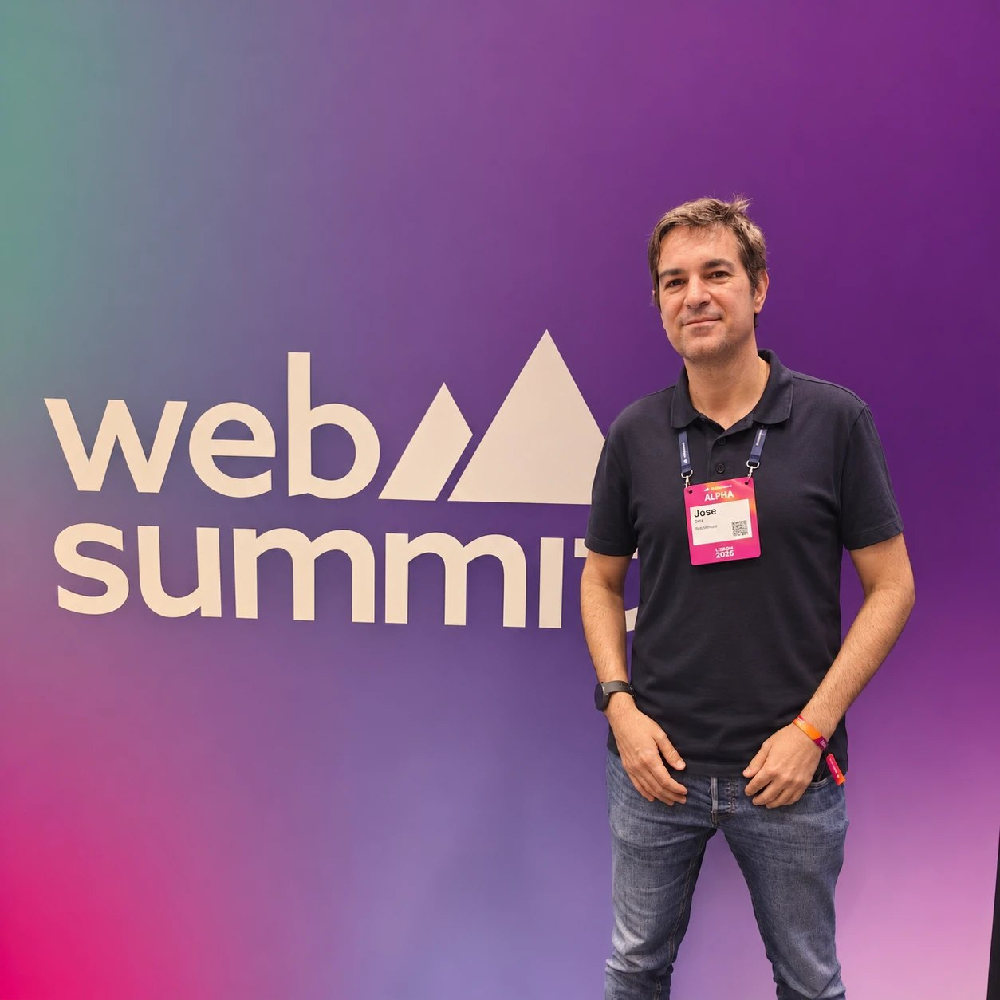

Skip to the content
José Bota
Web Summit
How he works
For you
Photos
Use with AI
Contact
Photos
Photos of José, supplied by him.

José at Web Summit Lisbon 2026.
Photo supplied by José, 2026-11-17.
José Bota.
Photo supplied by José, 2026-11-17.